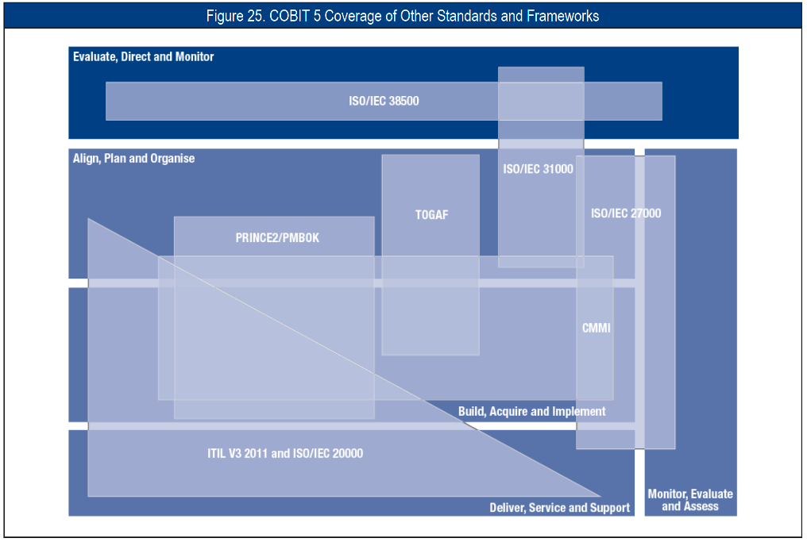

Tugas UAS
-
Penjelasan Singkat
-
COBIT 5
COBIT5 adalah kerangka kerja bisnis untuk tata kelola TI dan manajemen perusahaan. COBIT5 memberikan lima prinsip dan tujuh pendukung untuk memaksimalkan nilai dan meminimalkan risiko perusahaan. Kelima prinsip tersebut 1) meeting stakeholder needs, 2) covering the enterprise end to end, 3) applying a single integrated framework, 4) Enabling a holistic approach, and 5) Separating governance from management. Ketujuh faktor pendukung tersebut adalah 1) principles, policies and frameworks, 2) processes, 3) organizational structures, 4) culture, ethics and behavior, 5) information, 6) services, infrastructure and application, and 7) people, skill and competencies.
-
ITIL
ITIL®V3 2011 adalah standar manajemen layanan TI berdasarkan lima prinsip: 1) service strategy, 2) service design, 3) service transition, 4) service operation, and 5) continual service improvement. Prinsip-prinsip menjelaskan praktik terbaik dalam manajemen layanan TI. Prinsip-prinsip tersebut berkonsentrasi pada pengukuran dan peningkatan kualitas layanan TI secara terus menerus.
-
ISO 27000 Series
ISO/IEC 27000 Series menekankan bagaimana teknik keamanan TI dan sistem manajemen keamanan informasi mengatur kinerja TI dalam organisasi. Seri berdasarkan kode praktik tentang manajemen keamanan informasi, tujuan tata kelola, dan berbagai kontrol keamanan khusus.
-
COBIT 5
-
Point Perbandingan
-
ITIL® V3 2011 and ISO/IEC 20000
Area dan domain COBIT 5 berikut dicakup oleh ITIL V3 2011 dan ISO/IEC 20000:
- Sebuah subset dari proses dalam domain DSS
- Subset dari proses dalam domain BAI
- Beberapa proses dalam domain APO
-
ISO/IEC 27000 Series
Area dan domain COBIT 5 berikut dicakup oleh ISO/IEC 27000:
- Proses terkait keamanan dan risiko dalam domain EDM, APO, dan DSS
- Berbagai aktivitas terkait keamanan dalam proses di domain lain
- Memantau dan mengevaluasi kegiatan dari domain MEA
-
Gambaran cakupan relatif antara standar dan
kerangka kerja.

-
ITIL® V3 2011 and ISO/IEC 20000
-
Tujuan/Fokus Utama
Hasil Perbandingan Tingkat Kredibilitas Layanan Keamanan Informasi Dikuti dari Gunawan, 2019. Menurut Heru Susanto [2] COBIT fokus pada lingkup Tata Kelola TI, ITIL fokus pada Manajemen Layanan, sedangkan ISO/IEC 27001 fokus pada Sistem Manajemen Keamanan Informasi. Integrasi antara ITIL dan ISO/IEC 27001 akan meningkatkan keamanan informasi dan tingkat layanan TI[11].
Sedangkan integrasi antara COBIT dan ISO/IEC 27001 akan meningkatkan manfaat bagi organisasi terutama dalam hal keamanan TI dan manfaat TI bagi organisasi[8]. Namun menurut Heru Susanto[2], ketiga best practice tersebut memiliki perbedaan jumlah negara dengan menggunakan data berikut ISO/IEC 27001 sejumlah 163 negara, ITIL sejumlah 50 negara dan COBIT sejumlah 160 negara. Dengan demikian, akan ada perbedaan pengakuan global antara integrasi COBIT dan ISO/IEC 27001 dengan integrasi ITIL dan ISO/IEC 27001.
-
Referensi Video Penjelasan
Berbeda dengan COBIT versi sebelumnya yang memiliki
Maturity Model/Level, pada COBIT 5 lebih dikenal dengan
nama Capability Model.
Set produk COBIT 5 mencakup sebuah proses capability
model, berdasarkan ISO/IEC 15504 Software
Engineering—Process Assessment standard. Model ini akan
mencapai tujuan keseluruhan yang sama dari penilaian
proses dan dukungan peningkatan proses, yaitu, akan
menyediakan sarana untuk mengukur kinerja proses tata
kelola (berbasis EDM) atau proses manajemen (berbasis
PBRM), dan akan memungkinkan area untuk perbaikan harus
diidentifikasi.
Pada COBIT 5 terdapat 6 tingkat kemampuan (capability
level) yang dapat dicapai suatu proses, yang terdiri
dari:
- Level 0 (Incomplete Process) : Proses tidak ditempatkan atau tidak dapat mencapai tujuannya. Pada tingkat ini proses tidak memiliki tujuan untuk dicapai. Untuk alasan ini level ini tidak memiliki atribut.
- Level 1 (Performed Process) (Satu Atribut) : Prosesnya ada dan mencapai tujuannya sendiri. Level ini hanya memiliki “Process Performance” sebagai atribut proses.
- Level 2 (Managed Process) (Dua Atribut) : Proses tersebut dilaksanakan mengikuti serangkaian kegiatan seperti perencanaan, pemantauan dan penyesuaian kegiatan. Hasil ditetapkan, dikendalikan dan dipelihara. Level ini memiliki "Manajemen Kinerja" dan "Manajemen Produk Kerja" sebagai atribut proses.
- Level 3 (Established Process) (Dua Atribut) : Level sebelumnya sekarang diimplementasikan mengikuti proses yang ditentukan yang memungkinkan pencapaian hasil proses. Level ini memiliki “Process Definition” dan “Process Deployment” sebagai atribut proses.
- Level 4 (Predictable Process) (Dua Atribut) : Tingkat ini mengimplementasikan proses dalam batas yang ditentukan yang memungkinkan pencapaian hasil proses. Tingkat ini memiliki "Manajemen Proses" dan "Kontrol Proses" sebagai atribut proses
- Level 5 (Optimising Process) (Dua Atribut) : Tingkat ini mengimplementasikan proses dengan cara yang memungkinkan untuk mencapai tujuan bisnis yang relevan, saat ini dan yang diproyeksikan. Tingkat ini memiliki "Inovasi Proses" dan "Optimasi Proses" sebagai atribut proses.
Pendekatan penilaian berbasis COBIT 5 ISO/IEC 15504 terus memfasilitasi tujuan berikut:
- Memungkinkan badan tata kelola dan manajemen untuk mengukur capability proses.
- Adanya pemeriksaan kesehatan saat ini dan masa depan untuk mendukung pengambilan keputusan investasi tata kelola dan manajemen terkait dengan peningkatan proses.
- Memberikan analisis kesenjangan dan informasi perencanaan perbaikan untuk mendukung definisi proyek perbaikan yang dapat dibenarkan.
- Memberikan peringkat penilaian kepada badan tata kelola dan manajemen untuk mengukur dan memantau kemampuan saat ini.
- PPT Mata Kuliah IT Governance - E-Learning STMIK Antar Bangsa
- Buku Cobit 5 "A Business Framework for the Governance and Management of Enterprise IT" by ISACA
- Jurnal "Comparative Study Between the Integration of ITIL and ISO / IEC 27001 with the Integration of COBIT and ISO / IEC 27001". Link: klik disini
- Jurnal "A Benchmarking Study of Standard Frameworks for Information Technology Governance". Link: klik disini
- Jurnal "FRAMEWORKSFOR AUDITOFAN INFORMATIONSYSTEMIN PRACTICE". Link: klik disini
- Jurnal "Tata Kelola Teknologi Informasi Menggunakan Framework Cobit 5, ITIL,Dan ISO/IEC 27002 Di Perguruan Tinggi". Link: klik disini